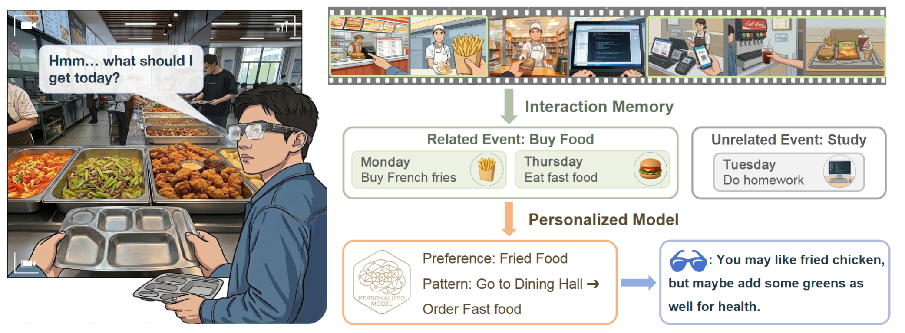
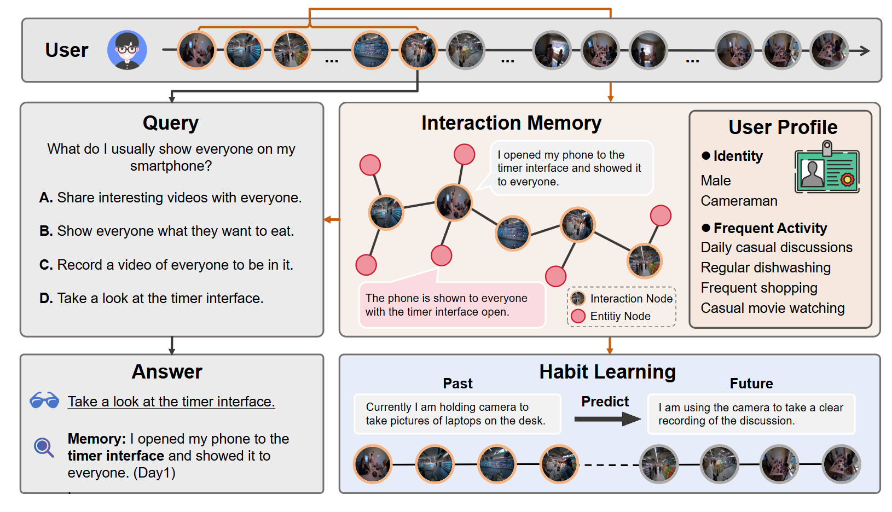
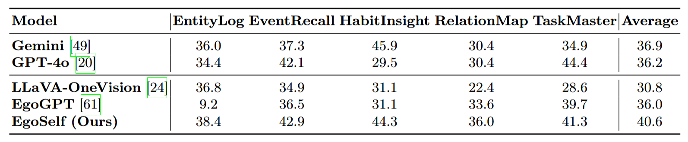
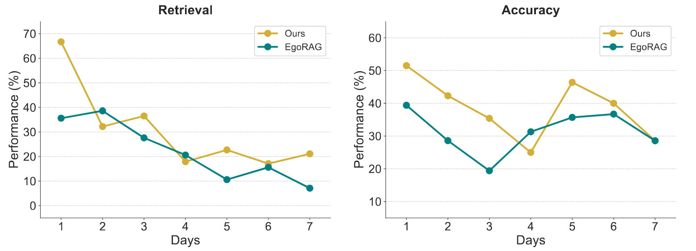

TL;DR: We present EgoSelf, a graph-based egocentric assistant equipped with interaction memory and dedicated personalized learning to model long-term user behaviors and enable user-specific customization.
Egocentric assistants often rely on first-person view data to capture user behavior and context for personalized services. Since different users exhibit distinct habits, preferences, and routines, such personalization is essential for truly effective assistance. However, effectively integrating long-term user data for personalization remains a key challenge. To address this, we introduce EgoSelf, a system that includes a graph-based interaction memory constructed from past observations and a dedicated learning task for personalization. The memory captures temporal and semantic relationships among interaction events and entities, from which user-specific profiles are derived. The personalized learning task is formulated as a prediction problem where the model predicts possible future interactions from individual user's historical behavior recorded in the graph. Extensive experiments demonstrate the effectiveness of EgoSelf as a personalized egocentric assistant.



@article{li2024dgns,
title={EgoSelf: From Memory to Personalized Egocentric Systems},
author={Wang, Yanshuo and Xu, Yuan and Li, Xuesong and Hong, Jie and Wang, Yizhou and Chen, Chang Wen and Zhu, Wentao},
journal={XXXX},
year={2026}
}